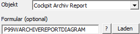
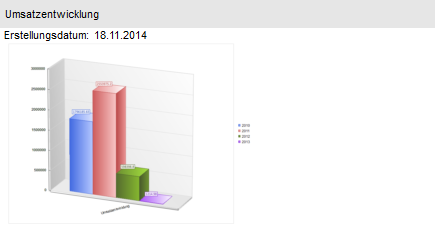

Das Objekt "Cockpit Archiv Report" zeigt das Diagramm aus einem archivierten Report an. Als Key dient die "Archiv-ID" (d.h. Feld "Text" oder Bereich "View / Var" muss gefüllt sein).

Ø Formular (optional)
Das Formular "P99WARCHIVEREPORTDIAGRAM" bietet die Möglichkeit den Listentyp für die Darstellung noch anpassen zu können. Mit Hilfe des Icons kann eine List aller WinLine LIST-Listen geöffnet werden, um nach einer Liste zu suchen. Zusätzlich besteht die Möglichkeit das Formular der ausgewählten Liste mit Hilfe des Buttons direkt zu öffnen.
Beispiel - Externes Objekt mit dem Typ "Objekt" - Objekt "Cockpit Liste"
